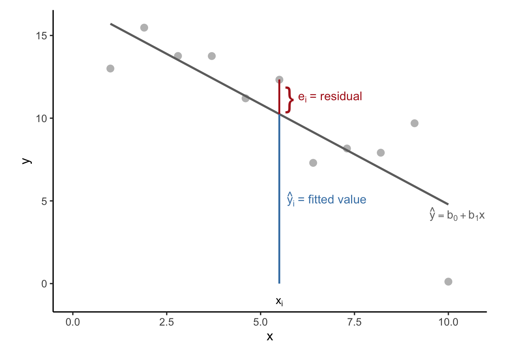

27 Simple Linear Regression
In many practical situations, we are interested in understanding how two observed quantitative variables relate to one another. Suppose we have a dataset with \(n\) paired observations of two variables \(x\) and \(y\):
| Observation | \(x\) | \(y\) |
|---|---|---|
| 1 | \(x_1\) | \(y_1\) |
| 2 | \(x_2\) | \(y_2\) |
| \(\vdots\) | \(\vdots\) | \(\vdots\) |
| \(n\) | \(x_n\) | \(y_n\) |
A first step in analyzing this relationship is to visualize the data using a scatterplot, where each point represents a pair \((x_i, y_i)\). This helps us assess whether a linear pattern is plausible:
Before we fit a regression line, we examine how the variables covary. The correlation coefficient is a standardized measure of the linear association between \(x\) and \(y\):
\[ r_{xy} = \frac{s_{xy}}{s_x s_y} \]
Where:
\(s_{xy}\) is the sample covariance between \(x\) and \(y\): \[ s_{xy} = \frac{1}{n - 1} \sum_{i=1}^{n} (x_i - \bar{x})(y_i - \bar{y}) \]
\(s_x\) and \(s_y\) are the sample standard deviations of \(x\) and \(y\).
The sign and magnitude of this value (\(-1 < r_{xy} < 1\)) determine the strength and direction of the linear relationship (see Chapter 7 for more detail).
27.1 The Least Squares Method: Fitting a Straight Line
Once we suspect that a linear relationship exists between two variables, we aim to quantify it using a regression line of the form:
\[ y = b_0 + b_1 x \]
Where:
- \(y\) is the dependent variable (also called the response variable),
- \(x\) is the independent variable (also called the predictor or explanatory variable),
- \(b_0\) is the intercept (the value of \(y\) when \(x = 0\)),
- \(b_1\) is the slope (the change in \(y\) for a one-unit change in \(x\)).
This regression line is intended to summarize the overall trend in the data, allowing us to predict the average value of \(y\) for a given \(x\).
Note 1
In regression analysis, we are describing how \(y\) is associated with \(x\)—but this is not the same as proving causation. The analysis shows a statistical association, not a causal one.
Note 2
In regression, we treat \(x\) as the variable that helps explain \(y\). We focus on a directional relationship, often written as:
\[x \rightarrow y\]
In contrast, correlation treats the two variables symmetrically: \[x \leftrightarrow y\]
and the correlation coefficient \(r_{xy} = r_{yx}\).
Our goal is to find a line that best captures the relationship between a predictor variable \(x\) and a response variable \(y\). Real-world data, however, rarely fall exactly on a perfect line. Each observed value \(y_i\) is typically slightly above or below the value predicted by the line at the corresponding \(x_i\). The difference between the actual value and the predicted value is called the residual, denoted by \(e_i\) (which can be seen as an estimate of the error term in the model).
Mathematically, the residual for observation \(i\) is defined as \(e_i = y_i - \hat{y}_i\), where \(\hat{y}_i = b_0 + b_1 x_i\) is the value predicted by the regression line. Residuals reflect how far off our predictions are from the actual data points. A positive residual means the observed value lies above the line, while a negative residual indicates it lies below. This is shown in Figure 27.1.
The least squares method — the foundation of ordinary linear regression — seeks to find the values of the intercept \(b_0\) and slope \(b_1\) that produce the “best-fitting” line.
But what does “best-fitting” mean? In this context, it refers to the line that minimizes the total squared vertical distances between the observed values \(y_i\) and their predicted counterparts \(\hat{y}_i\). These vertical distances are precisely the residuals, and the objective is to minimize the Error Sum of Squares (SSE) (also known as residual sum of squares):
\(\text{SSE} = \sum_{i=1}^{n} (y_i - \hat{y}_i)^2 = \sum_{i=1}^{n} (y_i - b_0 - b_1 x_i)^2\)
Squaring the residuals serves two purposes. First, it ensures that all errors contribute positively to the total (so they don’t cancel out), and second, it gives disproportionately more weight to larger errors, thereby penalizing predictions that are far from the observed data.
By finding the values of \(b_0\) and \(b_1\) that minimize this sum, the least squares method provides a regression line that captures the overall trend in the data as effectively as possible. This line represents the best linear approximation to the relationship between \(x\) and \(y\) in the sense that it minimizes total prediction error under the squared loss criterion.
In summary, the method of least squares gives us a principled way to estimate a linear relationship from data by focusing on how closely our predictions align with observed outcomes, and adjusting the line to minimize those discrepancies.

To find the optimal values of \(b_0\) and \(b_1\), we use the following formulas:
Slope:
\[ b_1 = \frac{\sum_{i=1}^{n}(x_i - \bar{x})(y_i - \bar{y})} {\sum_{i=1}^{n}(x_i - \bar{x})^2} = \frac{s_{xy}}{s_x^2} = r_{xy} \cdot \frac{s_y}{s_x} \]
where:
- \(s_{xy}\) is the sample covariance between \(x\) and \(y\)
- \(s_x^2\) is the sample variance of \(x\)
- \(r_{xy}\) is the correlation coefficient
\(b_0\) (intercept) is the predicted value of \(y\) when \(x = 0\). It tells us where the regression line crosses the \(y\)-axis. While sometimes meaningful, in many cases it’s just a mathematical anchor and not of direct interest.
Intercept:
\[ b_0 = \bar{y} - b_1 \bar{x} \]
\(b_1\) (slope) is the main coefficient of interest. It tells us how much we expect \(y\) to change, on average, for a one-unit increase in \(x\). Its sign tells us the direction (positive or negative association), and its magnitude tells us the strength of the relationship.
Derivation of OLS Estimators
Where do the formulas for \(b_0\) and \(b_1\) come from? We want to estimate the regression line:
\[ y_i = b_0 + b_1 x_i + \varepsilon_i \]
To find the values of \(b_0\) and \(b_1\) that minimize the error sum of squares (SSE):
\[ \text{SSE} = \sum_{i=1}^{n} (y_i - b_0 - b_1 x_i)^2 \]
Step 1: Take Partial Derivatives
We compute the first derivatives of SSE with respect to \(b_0\) and \(b_1\):
\[ \frac{\partial \text{SSE}}{\partial b_0} = -2 \sum_{i=1}^{n} (y_i - b_0 - b_1 x_i) \]
\[ \frac{\partial \text{SSE}}{\partial b_1} = -2 \sum_{i=1}^{n} x_i (y_i - b_0 - b_1 x_i) \]
Step 2: Set Derivatives to Zero (Normal Equations)
To minimize SSE, set both derivatives equal to zero:
\[ \sum_{i=1}^{n} (y_i - b_0 - b_1 x_i) = 0 \]
\[ \sum_{i=1}^{n} x_i (y_i - b_0 - b_1 x_i) = 0 \]
Step 3: Solve for \(b_0\) and \(b_1\)
From the first equation:
\[ \sum y_i = n b_0 + b_1 \sum x_i \Rightarrow b_0 = \bar{y} - b_1 \bar{x} \]
Substitute this into the second normal equation and simplify:
\[ \sum x_i y_i = b_0 \sum x_i + b_1 \sum x_i^2 \]
Use the substitution for \(b_0\) and apply algebra:
\[ b_1 = \frac{\sum (x_i - \bar{x})(y_i - \bar{y})}{\sum (x_i - \bar{x})^2} \]
This gives us the slope \(b_1\). Once \(b_1\) is known, plug back in to get:
\[ b_0 = \bar{y} - b_1 \bar{x} \]
Final Formulas
- Slope: \[ b_1 = \frac{\sum (x_i - \bar{x})(y_i - \bar{y})}{\sum (x_i - \bar{x})^2} \]
- Intercept: \[ b_0 = \bar{y} - b_1 \bar{x} \]
These are the least squares estimates of the intercept and slope.
Example 27.1: Oil Consumption and Outdoor Temperature
This example analyzes how monthly oil consumption varies with outdoor temperature. We model the relationship using simple linear regression.
We define:
-
\(x\): average outdoor temperature in °C
- \(y\): monthly oil consumption in liters
We want to estimate the model:
\[ y = \beta_0 + \beta_1 x + \varepsilon \]
Observed Data
| Month | \(x\) (°C) | \(y\) (liters) |
|---|---|---|
| June | 15.1 | 155 |
| July | 14.4 | 75 |
| August | 15.2 | 135 |
| September | 10.2 | 225 |
| October | 8.3 | 275 |
| November | 3.8 | 385 |
| December | 0.5 | 470 |
| January | -1.4 | 525 |
| February | -4.1 | 625 |
| March | 1.2 | 450 |
We create new columns in the data table to facilitate the calculations the regression coefficients:
| \(x\) | \(y\) | \(x^2\) | \(y^2\) | \(xy\) |
|---|---|---|---|---|
| 15.1 | 155 | 228.01 | 24025 | 2340.5 |
| 14.4 | 75 | 207.36 | 5625 | 1080 |
| 15.2 | 135 | 231.04 | 18225 | 2052 |
| 10.2 | 225 | 104.04 | 50625 | 2295 |
| 8.3 | 275 | 68.89 | 75625 | 2282.5 |
| 3.8 | 385 | 14.44 | 148225 | 1463 |
| 0.5 | 470 | 0.25 | 220900 | 235 |
| -1.4 | 525 | 1.96 | 275625 | -735 |
| -4.1 | 625 | 16.81 | 390625 | -2562.5 |
| 1.2 | 450 | 1.44 | 202500 | 540 |
| Σ | 874.24 | 1160995 | 8990.5 |
- \(\sum x = 63.2\)
- \(\sum y = 3320\)
- \(n = 10\)
We now can estimate the coefficients using the least squares formulas:
\(\hat{b}_1 = \frac{\sum xy - \frac{1}{n} \sum x \sum y}{\sum x^2 - \frac{1}{n} (\sum x)^2}\)
\(\hat{b}_0 = \bar{y} - \hat{b}_1 \bar{x}\)
Plugging in the values:
- \(\bar{x} = \frac{63.2}{10} = 6.32\)
- \(\bar{y} = \frac{3320}{10} = 332\)
Then:
\(\hat{b}_1 = \frac{8990.5 - \frac{63.2 \cdot 3320}{10}}{874.24 - \frac{63.2^2}{10}} \approx -25.3\)
\(\hat{b}_0 = 332 - (-25.3)(6.32) \approx 492\)
The fitted regression line is thus given by:
\(\hat{y} = 492 - 25.3x\)
and visualized in Figure 27.2. This tells us:
- When the temperature is 0°C, predicted oil usage is about 492 liters.
- For each 1°C increase in temperature, oil consumption decreases by approximately 25.3 liters.
The R output for this model fit is the following:
Call:
lm(formula = y ~ x, data = oil_df)
Residuals:
Min 1Q Median 3Q Max
-52.932 -10.235 -7.991 19.960 44.747
Coefficients:
Estimate Std. Error t value Pr(>|t|)
(Intercept) 491.617 12.596 39.03 2.04e-10 ***
x -25.256 1.347 -18.75 6.77e-08 ***
---
Signif. codes: 0 '***' 0.001 '**' 0.01 '*' 0.05 '.' 0.1 ' ' 1
Residual standard error: 29.36 on 8 degrees of freedom
Multiple R-squared: 0.9777, Adjusted R-squared: 0.975
F-statistic: 351.5 on 1 and 8 DF, p-value: 6.769e-0827.2 Residuals and Sums of Squares
In simple linear regression, each predicted value \(\hat{y}_i\) is calculated using the estimated regression line:
\[ \hat{y}_i = b_0 + b_1 x_i \]
This value represents the model’s best guess for \(y_i\) based on the corresponding \(x_i\). However, the predicted value rarely matches the observed outcome exactly. The already mentioned residual is defined as the difference between the actual value and the predicted one:
\[ e_i = y_i - \hat{y}_i \]
Residuals represent the portion of the outcome not explained by the model. For the oil consumption data, the residuals quantify the mismatch between predicted oil usage based on temperature and the actual recorded usage. The following table shows the residuals calculated for each observation in the dataset:
| \(x_i\) | \(y_i\) | \(\hat{y}_i = 492 - 25.3x_i\) | \(e_i = y_i - \hat{y}_i\) |
|---|---|---|---|
| 15.1 | 155 | 109.97 | 45.03 |
| 14.4 | 75 | 127.68 | -52.68 |
| 15.2 | 135 | 107.44 | 27.56 |
| 10.2 | 225 | 233.94 | -8.94 |
| 8.3 | 275 | 282.01 | -7.01 |
| 3.8 | 385 | 395.86 | -10.86 |
| 0.5 | 470 | 479.35 | -9.35 |
| -1.4 | 525 | 527.42 | -2.42 |
| -4.1 | 625 | 595.73 | 29.27 |
| 1.2 | 450 | 461.64 | -11.64 |
Understanding residuals leads us to an important decomposition of the total variation in the response variable \(y\). This total variation, measured as the sum of squared deviations from the mean \(\bar{y}\), is called the Total Sum of Squares (SST):
\[ SST = \sum_{i=1}^{n} (y_i - \bar{y})^2 \]
This total variation can be split into two components. The first is the Regression Sum of Squares (SSR), which measures the variation explained by the regression line, that is, the part captured by the differences between the predicted values and the mean:
\[ SSR = \sum_{i=1}^{n} (\hat{y}_i - \bar{y})^2 \]
The second is the Error Sum of Squares (SSE), which captures the unexplained variation, the part of \(y\) that remains in the residuals:
\[ SSE = \sum_{i=1}^{n} (y_i - \hat{y}_i)^2 = \sum_{i=1}^{n} e_i^2 \]
Together, these satisfy the identity:
\[ SST = SSR + SSE \]
27.3 The ANOVA Table
The above decomposition of sum of squares forms the foundation of the ANOVA (Analysis of Variance) table shown in Table 27.1. The table summarizes how much of the total variability in \(y\) is explained by the model versus left in the residuals:
| Source | Sum of Squares (SS) | Degrees of Freedom (df) | Mean Square (MS) |
|---|---|---|---|
| Regression | SSR | 1 | \(MSR = SSR / 1\) |
| Residual | SSE | \(n - 2\) | \(MSE = SSE / (n - 2)\) |
| Total | SST | \(n - 1\) |
The quantity \(MSE\) is also known as the residual variance and plays a key role in inference.
To evaluate how well the regression line captures the observed data, we compute the coefficient of determination, denoted \(R^2\):
\[ R^2 = \frac{SSR}{SST} = 1 - \frac{SSE}{SST} \]
This value represents the proportion of total variation in \(y\) that is explained by the model. It lies between 0 and 1. If \(R^2 = 1\), the model perfectly fits the data and all residuals are zero. If \(R^2 = 0\), the model fails to explain any variation, and the predicted values are simply equal to the mean \(\bar{y}\).
In the oil consumption example, the ANOVA table yields the following result in R:
Analysis of Variance Table
Response: y
Df Sum Sq Mean Sq F value Pr(>F)
x 1 302866 302866 351.46 6.769e-08 ***
Residuals 8 6894 862
---
Signif. codes: 0 '***' 0.001 '**' 0.01 '*' 0.05 '.' 0.1 ' ' 1Thus we have that:
-
\(SSR = 302886\),
-
\(SST = 309760\),
- So,
\[ R^2 = \frac{302886}{309760} = 0.978 \] which you can also read from the R output above.
This means that
97.8% of the variation in oil consumption is explained by the temperature-based regression model
indicating a very strong linear relationship between the two variables.
R-squared and Correlation in Simple Linear Regression
In simple linear regression, where we model the relationship between a single explanatory variable \(x\) and a response variable \(y\):
\[ y = \beta_0 + \beta_1 x + \varepsilon \]
the R-squared value has a very clear interpretation:
R-squared is equal to the square of the Pearson correlation coefficient between \(x\) and \(y\).
That is:
\[ R^2 = \text{Corr}(x, y)^2 \]
This means that in simple linear regression:
- R-squared tells us the proportion of the variance in \(y\) that is explained by \(x\).
- If the correlation between \(x\) and \(y\) is strong (positive or negative), R-squared will be close to 1.
- If there is no linear relationship, the correlation (and thus R-squared) will be close to 0.
This direct relationship only holds in simple linear regression, not in multiple regression settings.
Exercises
- You are given the following small dataset with 4 observations:
| \(x\) | \(y\) |
|---|---|
| 1 | 2 |
| 2 | 3 |
| 4 | 6 |
| 5 | 8 |
We want to fit the model:
\[ y = b_0 + b_1 x + \varepsilon \]
Tasks:
- Calculate the means of \(x\) and \(y\)
- Compute the slope estimate \(b_1 = \dfrac{\sum (x_i - \bar{x})(y_i - \bar{y})}{\sum (x_i - \bar{x})^2}\)
- Compute the intercept \(b_0 = \bar{y} - b_1 \bar{x}\)
- Write out the estimated regression line
Solution
(a) Compute the means
\[ \bar{x} = \frac{1 + 2 + 4 + 5}{4} = \frac{12}{4} = 3 \\ \bar{y} = \frac{2 + 3 + 6 + 8}{4} = \frac{19}{4} = 4.75 \]
(b) Compute \(b_1\)
We calculate the numerator and denominator separately:
\(\sum (x_i - \bar{x})(y_i - \bar{y})\):
| \(x\) | \(y\) | \(x_i - \bar{x}\) | \(y_i - \bar{y}\) | \((x_i - \bar{x})(y_i - \bar{y})\) |
|---|---|---|---|---|
| 1 | 2 | -2 | -2.75 | 5.5 |
| 2 | 3 | -1 | -1.75 | 1.75 |
| 4 | 6 | 1 | 1.25 | 1.25 |
| 5 | 8 | 2 | 3.25 | 6.5 |
| 15.0 |
\(\sum (x_i - \bar{x})^2\):
\[ (-2)^2 + (-1)^2 + 1^2 + 2^2 = 4 + 1 + 1 + 4 = 10 \]
So:
\[ b_1 = \frac{15}{10} = 1.5 \]
(c) Compute \(b_0\)
\[ b_0 = \bar{y} - b_1 \bar{x} = 4.75 - 1.5 \cdot 3 = 4.75 - 4.5 = 0.25 \]
(d) Regression line
\[ \hat{y} = 0.25 + 1.5x \]
This means for every 1 unit increase in \(x\), \(y\) increases by 1.5 on average.
- We want to understand how a car’s horsepower (
hp) affects its fuel efficiency measured in miles per gallon (mpg). The following mdoel was fit:
Call:
lm(formula = mpg ~ hp, data = mtcars)
Residuals:
Min 1Q Median 3Q Max
-5.7121 -2.1122 -0.8854 1.5819 8.2360
Coefficients:
Estimate Std. Error t value Pr(>|t|)
(Intercept) 30.09886 1.63392 18.421 < 2e-16 ***
hp -0.06823 0.01012 -6.742 1.79e-07 ***
---
Signif. codes: 0 '***' 0.001 '**' 0.01 '*' 0.05 '.' 0.1 ' ' 1
Residual standard error: 3.863 on 30 degrees of freedom
Multiple R-squared: 0.6024, Adjusted R-squared: 0.5892
F-statistic: 45.46 on 1 and 30 DF, p-value: 1.788e-07Tasks
- Write out the estimated regression equation in the form
\(\hat{y} = b_0 + b_1 x\), where \(x\) is horsepower and \(y\) is mpg.
- Interpret the intercept \(b_0\) in context.
- Interpret the slope \(b_1\) in context.
Solution
- Based on the regression output we get:
\[ \hat{\text{mpg}} = 30.10 - 0.068 \cdot \text{hp} \]
Intercept (\(b_0 \approx 30.10\)): This means that a car with 0 horsepower is predicted to have 30.10 mpg. Although unrealistic (cars don’t have 0 hp), it serves as a baseline in the regression equation.
Slope (\(b_1 \approx -0.068\)): For each additional unit of horsepower, mpg is predicted to decrease by about 0.068. In other words, more powerful engines tend to reduce fuel efficiency.